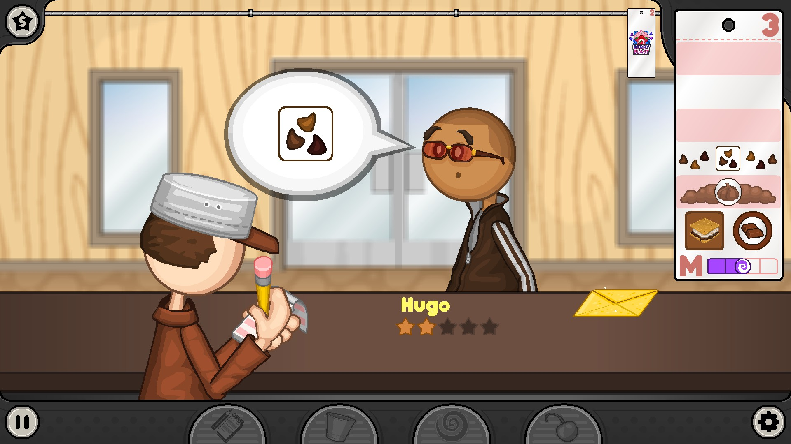
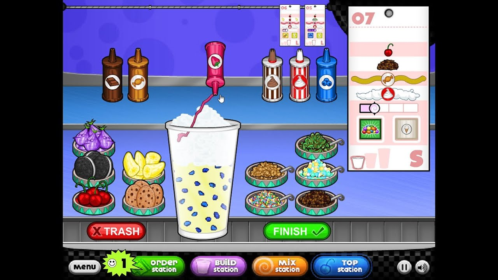
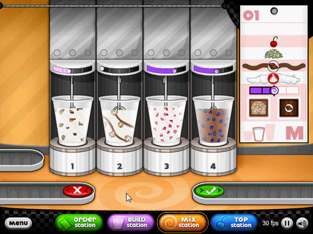
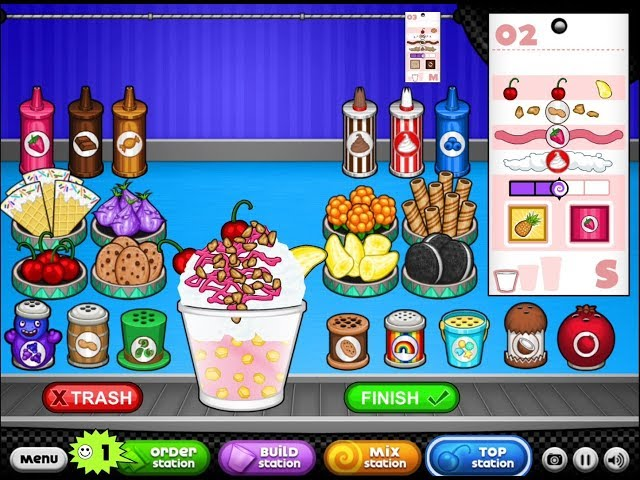

"To abandon an ice cream sundae in Death Valley is to: desert your dessert in the desert."
Why did the woman start her on ice cream business? She liked working on sundaes!
Want to start your own sundae business? Want to see smiles on customers' faces after they've received delicious sundaes? Play Papa's Freezeria!
Game Features:
The Order Station
This is the area where customers will show up and order their sundaes. By clicking on the waiting customers, the system will help you take note of the toppings they want on their sundaes and how it should be mixed and built. After you finish their order, advance onto the next station: the building station. Later, when you finish preparing their order at the other stations, you will return to the order station where customers will leave ratings and tips. Make sure to check this station regularly, as customers will come in while you are preparing orders, and may leave lower ratings on this station if you keep them waiting for too long. You may also decorate the lobby by manually placing items which the customers interact with.
The Build Station
This is the station where you start the customer's sundae order. Here, you will need to add mixables and syrups to the sundaes, with options for different sizes, mixables, and syrups. Choose the desired size, add in the desired mixables by completing a calibration, and add the syrup also by completing a calibration. Be sure to choose these by your customer's preferences! Cup sizes are: small, medium large. Mixables include: nutty butter cups, strawberries, cookie dough, creameo bits, marshmellows, pineapple, and Yum n' M's. The following syrups are available: chocolate syrup, vanilla syrup, strawberry syrup, mint syrup, banana syrup, and rainbow sherbet syrup.
The Mix Station
Customers would like their sundaes blended to different levels. At this station, you will blend the combined base, mixable, and syrup prepared in the previous station to the specific blend the customer chose (smooth, regular, or chunky). To mix, drag the sundae into one of the four mixers and wait for the timer to reach the indicated time on the customer's order, and then slide the drink to the check mark to deliver it to the topping station for toppings. It is recommended to leave the sundaes mixing at this station while you do other short tasks at other stations to maximize efficiency. Just remember to come back when you think it's done!
The Topping Station
Here, you will add whipped creams, toppings, and additional topping syrups to the customer's order. Topping syrups include strawberry topping , chocolate topping, and butterscotch topping. You have a choice of either regular whipped cream or chocolate whipped cream, as requested by the customer on their order. There are a variety of toppings: placeable toppings include cherrys and creamios while sprinkled toppings include rainbow sprinkles and chocolate chips. Drag the items to place them as evenly as possible on the sundae according to the customer's order. Your sundae is finally finished! Press finish, and you will return to the customer at the order station, who will leave a rating and a tip based on your performance at all stations!
Customers: Customers are a valuable component to your business. Be sure to get their order as precise and quick as possible for them to leave a good rating and tip! If you do so, customers will become regulars and you will be able to unlock new customers that may tip more! Some customers are labelled as "Closers" or "Food Critics." "Closers" come at the end of the day with a challenging order, and "Food critics" never order the same order twice!